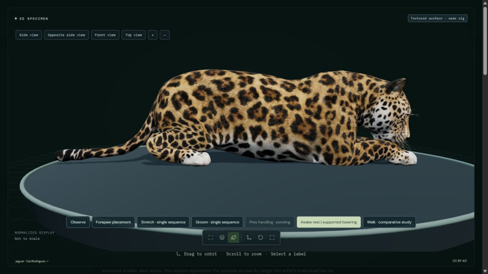
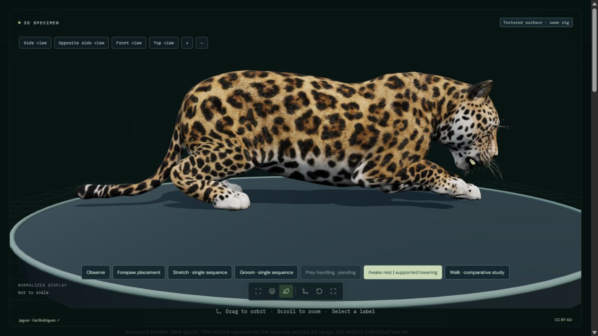
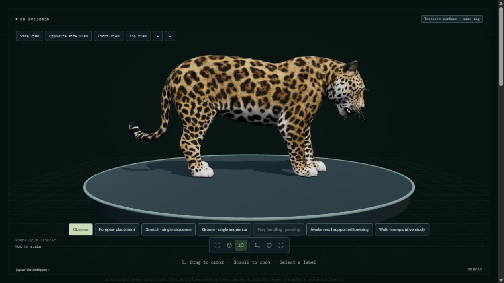

An eight-second study places the forepaws in sequence, folds the limbs and lowers the trunk into a supported awake posture. The wrist and toe joints articulate separately so the toes retain their support orientation. The final posture is held. This is an authored example, not a measured jaguar transition or physiological sleep.
External supported repose is implemented with limb articulation and pose-specific surface corrections. Ground clearance and mesh preservation are checked graphically. Muscle forces, dynamic balance, tissue mechanics, respiration, EEG, REM and physiological sleep are not simulated. Source proportions and fur remain artist interpretations; photorealism and biological accuracy are not independently validated.



The model and original textures remain credited to Ear.Rodriguez under CC BY 4.0. Only the resting study uses corrective geometry and shoulder weights. Observe and the existing walk return to the original geometry and skin weights. Surface-area, bone-length and contact checks are software diagnostics, not evidence of physiological validity. The displayed eight-second transition and final hold do not represent a measured resting duration.
47 animal processes remain fully unavailable; partial studies retain their limitations.
.jpg){kind=link}